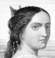

Alison Booth
Clark, Rev. David Wasgatt. Portraits of Celebrated Women: With Brief Biographies. Cincinnati, OH: Poe & Hitchcock, 1863.
TOC: Susannah Wesley; Catherine von Bora; Hannah More; Ann Hasseltine Judson; Isabella of Spain; Mary, Queen of Scots; Elizabeth Fry; Florence Nightingale; Mrs. Ann Wilkins; Mrs. Eliza Garrett; Penelope; Cornelia; Martha Washington; Pocahontas; Frances Sargent Osgood; Elizabeth Barrett Browning; Marie Antoinette; Madame Roland; Charlotte Bronté [sic]; Emily C. Judson; Mrs. Mary Fletcher; Lady Huntingdon; Helena, Duchess of Orleans; The Maid of Saragossa; Josephine; Harriet Beecher Stowe; Harriet E. Hosmer; Rosa Bonheur.
Chapter titles: The Mother of Reformers—Susannah Wesley; The Wife of Luther—Catherine von Bora; Consecrated Talents—Hannah More; The Missionary Heroine--Ann Hasseltine Judson; The Model Queen--Isabella of Spain; The Enigma of History--Mary, Queen of Scots; The Female Howard—Elizabeth Fry; An Angel of Mercy—Florence Nightingale; Africa's Benefactress—Mrs. Ann Wilkins; Foundress of a School for the Prophets—Mrs. Eliza Garrett; The Greek Matron—Penelope; The Roman Matron—Cornelia; Wife of the Father of His Country—Martha Washington; The Indian Maiden--Pocahontas; The Poetess of the Affections—Frances Sargent Osgood; The Songstress of Liberty—Elizabeth Barrett Browning; The Martyr Queen--Marie Antoinette; The Female Girondist—Madame Roland; Light Sown in Darkness—Charlotte Bronté [sic]; The Missionary Poet—Emily C. Judson; Walking with God—Mrs. Mary Fletcher; Exalted Piety and Noble Rank—Lady Huntingdon; Piety and Royalty--Helena, Duchess of Orleans; The Martial Heroine—The Maid of Saragossa; The Wife of Napoleon—Josephine; The Champion of Freedom—Harriet Beecher Stowe; The Female Sculptor—Harriet E. Hosmer; The Female Painter—Rosa Bonheur.
The Rev. D.W. Clark was the editor of Ladies' Repository. Spine title: Biographies of Celebrated Women.
-
Maid of Saragossa
-
 Ann Hasseltine Judson
Ann Hasseltine Judson -
 Florence Nightingale
Florence Nightingale -
 Ann Hasseltine Judson
Ann Hasseltine Judson -
Fanny Forester
Search OCLC WorldCat for this title.
Search Google Books for this title.